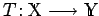
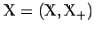
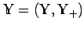

Inhalt Index DeskTop Bronstein
Funktionalanalysis Vektorräume Geordnete Vektorräume
Ein linearer Operator (s. Lit. 12.2, 12.20)  des geordneten Vektorraums  in den geordneten Vektorraum  heißt positiv, wenn gilt: